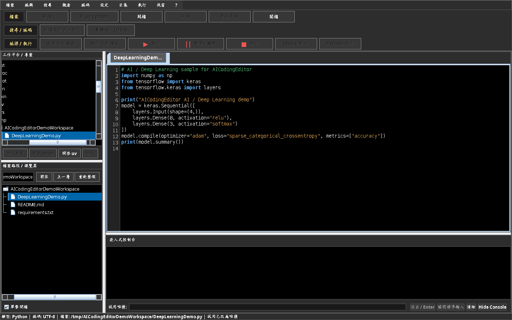
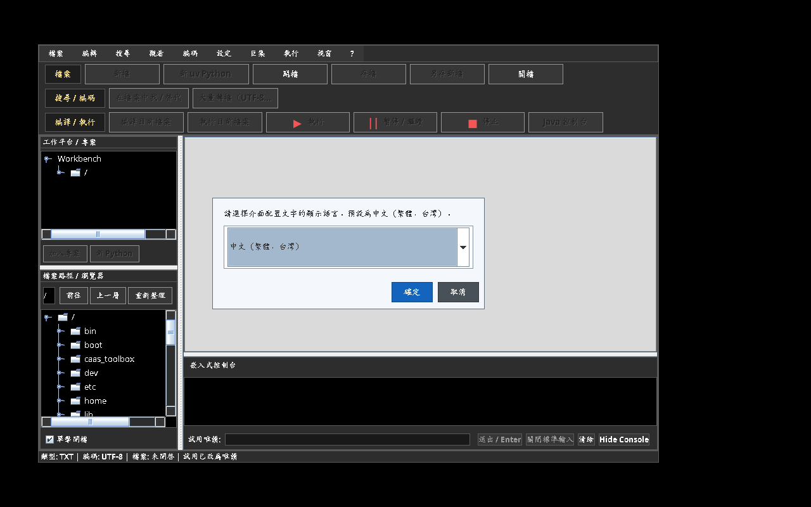
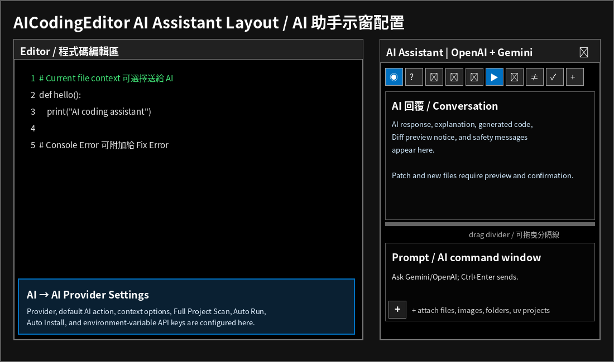

V0.2.99-01a Alpha 1 · 多程式語言、資料庫、AI、機器學習、深度學習、執行資料報表與即時變數監測。
GitHub 語言套件：本 Alpha 版提供 English、中文（繁體，台灣）與簡體中文三種預設語言下載包。啟動後仍可至「設定 → 偏好 → 一般 → 語言」自行切換。
V0.1.32 發行包說明：使用說明書與範例程式會同時放在 EXE/JAR 旁及 JAR 內建資源，避免移動資料夾後找不到檔案。
AICodingEditor 是多程式語言程式碼編輯器與工作平台，整合編輯、語法突顯、Workbench、檔案瀏覽器、嵌入式控制台、Python uv 虛擬環境、SQL、AI 學習專案，以及程式執行資料報表。
下圖為實際 AICodingEditor 視窗截圖；上方為選單與功能列，左側為 Workbench 與檔案瀏覽器，右側為編輯區與下方控制台／變數監測頁籤。

實際視窗配置：上方選單與功能列、左側專案與檔案、右側編輯器、下方嵌入式控制台／變數監測。
| 區域 | 相對位置 | 用途 |
|---|---|---|
| 選單與功能列 | 最上方 | 檔案、搜尋、編譯／執行、變數／圖表功能。 |
| Workbench／檔案瀏覽器 | 左側 | 專案導覽與目前開啟檔案的同步標示。 |
| 編輯器 | 右上 | 分頁、原始碼與語法突顯。 |
| 嵌入式控制台／變數監測 | 右下 | 程式輸入、執行控制、即時變數表格與波型。 |

語言位置：設定 → 偏好 → 一般 → 語言，可選繁體中文、簡體中文或 English。
右側 AI Assistant 面板包含 AI 功能列、AI 回覆區、Prompt／AI command window、附件列與左下角 + 附加按鈕。

AI Assistant：上方圖示列可選 Chat、Explain、Fix Error、Generate Code、Review Code；按 ▶ 或 Ctrl+Enter 才會送出。Prompt 左下角 + 可附加檔案、圖片、資料夾或 uv 專案；左側檔案樹也可拖放到 Prompt 區。
AICodingEditor.exe 與 AICodingEditor.jar 位於同一個資料夾。variable 報表資料夾。| 語言 | 需求／路徑範例 | 設定位置 |
|---|---|---|
| Java | JDK 17+；例如 D:\JDK-26.0.1\bin。 | 系統 PATH；以 java -version 驗證。 |
| Python | Python 3 與 uv；每個 AI 專案可建立獨立 .venv。 | 設定 → 偏好 → 一般 → Python 解譯器／uv Python 專案。 |
| C / C++ | GCC/G++ 或 MinGW；例如 D:\Dev-Cpp\MinGW64\bin\gcc.exe、g++.exe。 | 設定 → 偏好 → 一般 → 程式語言與工具鏈。 |
| C# / JS / PHP / Rust | .NET SDK 或 csc、Node.js、PHP CLI、Rust rustc/Cargo。 | 程式語言與工具鏈。 |
| Arduino | Arduino CLI、Board FQBN、Library Root。 | 程式語言與工具鏈 → Arduino。 |
| SQL | SQLite CLI、MS SQL sqlcmd、MySQL mysql CLI。 | SQLite 目標與 MS SQL 驅動程式設定。 |
print(f"AICE_VAR loss={loss:.4f}", flush=True)
print(f"AICE_VAR accuracy={accuracy:.4f}", flush=True)
print("AICE_TABLE_BEGIN training_history")
print("epoch,loss,accuracy")
print("1,0.82,0.61")
print("2,0.54,0.78")
print("AICE_TABLE_END")
print("AICE_FIG training_curve.png")每次實際「執行」會自動建立：
<程式檔案同層>/variable/<檔名_時間戳>/ AICodingEditor_RunReport.xlsx console_io.txt、variables.csv、run_metadata.txt table/、fig/
| 項目 | 擷取方式 | 結果 |
|---|---|---|
| 程式輸入 | 透過程式標準輸入送出的文字。 | Variables 與 Console I-O 工作表。 |
| 程式輸出 | 實際執行期間的標準輸出／錯誤。 | Console I-O 工作表與文字紀錄。 |
| 變數 | AICE_VAR name=value、name=value、name: value 或單行 JSON。 | Variables 工作表與 variables.csv。 |
| 表格 | AICE_TABLE_BEGIN...END，或執行時新建／更新的 CSV、TSV、JSON。 | 每張表格為一個 Excel 工作表，並複製至 table。 |
| 圖檔 | AICE_FIG 路徑，或執行時新建／更新的 PNG/JPG。 | 轉存 PNG 至 fig，並嵌入 Figures 工作表。 |
| 週期資料 | 第一欄是日期／時間或遞增數值且有數值序列。 | 自動建立 PNG 時序折線圖並放入 Excel 報表。 |
AICE_VAR 或 name=value 主動輸出；此格式可跨所有支援語言使用。為維持介面反應，每一變數每次執行保留目前執行期間的完整數值樣本歷程。
| 用途 | 套件 |
|---|---|
| 資料處理 | numpy、pandas、scipy、openpyxl |
| 視覺化 | matplotlib、seaborn、plotly |
| 機器學習 | scikit-learn、xgboost、lightgbm |
| 深度學習 | tensorflow、keras、torch、torchvision、torchaudio |
| 電腦視覺 | opencv-python、pillow |
| NLP / LLM | transformers、datasets、tokenizers、sentencepiece |
| 模型圖 | pydot、graphviz；另需本機 Graphviz 的 dot。 |
使用 AICodingEditor.app 或 Run_AICodingEditor.command。需安裝 Java 17+，並可由 JAVA_HOME 或 PATH 找到 java。內部測試包尚未 Apple Notarization，首次可在 Finder 右鍵「打開」。
工具鏈共用根目錄：Windows 預設為 D:\。請至 設定 → 偏好 → 一般 → 程式語言與工具鏈，按下套用共用根目錄預設，即可設定 D:\JDK-26.0.1、D:\Dev-Cpp、D:\ArduinoCLI、D:\Arduino、D:\SQL_Driver 的同層預設路徑。
Streamlit 按鈕：開啟並儲存 .py 檔案後按下 Streamlit。系統會在可用時使用目前 uv 虛擬環境，否則使用設定的 Python 解譯器，執行 streamlit run 目前檔案.py。每個環境首次需安裝：python -m pip install streamlit。按停止可結束 Streamlit 伺服器。
內部測試版本會在啟動時確認網路時間。試用結束後變成唯讀，可開啟與閱讀檔案，但不可存檔、建立專案、編譯、執行或使用控制台命令。
AI 助手的送出 AI 問題按鈕在可使用時會清楚顯示為藍色。AI 請求進行時，按鈕會暫時變成灰色並顯示AI 送出中...；請求成功、失敗或逾時後會自動恢復成藍色可送出狀態。
送出 AI 問題是非破壞性的網路請求，不再受舊版寫入／編譯限制所阻擋。由 AI 建立檔案或套用 Patch 仍必須選擇路徑、預覽／Diff 並由使用者明確確認。
主要的送出 AI 問題按鈕現在固定佔用提示輸入框正下方的一整列；即使 AI 面板較窄或程式視窗較矮，也會保持可見。
清除、Diff 預覽、套用 Patch、建立新檔會放在另一列緊湊按鈕列，因此不會換行或遮住送出按鈕。仍可使用 Ctrl+Enter 快速送出。
AI 請求 Context 與安全選項已由助手面板移至 AI → AI Provider 設定（也可按右上齒輪）。包括：目前選取程式碼、目前檔案、Console Error、Full Project Scan、Auto Run、Auto Install Package。
AI 回覆與提示輸入框之間現在有可拖曳分隔線，可放大任一視窗。下方五項功能改為小型圖示按鈕；滑鼠停留可顯示文字：送出、清除、Diff 預覽、套用 Patch、建立新檔。仍可按 Ctrl+Enter 送出。
工作區基礎背景改為純黑色、文字為白色，提高整體可讀性；只有目前選取的分頁使用藍色作為清楚的作用中提示。
若嵌入式控制台仍有子程序執行中，關閉其分頁前會詢問是否先停止該程序。
Workbench 與檔案瀏覽器改為強制使用 Basic Swing 檔案樹轉譯器：一般列固定為黑底、白色檔名／資料夾名稱。右鍵選單同樣固定黑底白字，選取項目以藍色顯示。
從 Workbench 移除專案、以及檔案列刪除確認，改用程式自有的高對比確認視窗；即使 Windows 主題忽略原生顏色，訊息與「是／否」按鈕仍可清楚閱讀。
程式碼檔案分頁改用 Basic 分頁轉譯器，並在右側保留固定的 × 關閉欄。白色 × 永遠可見；滑鼠移入時改為紅色。未儲存檔案仍保留儲存／不儲存關閉／取消的確認流程。
原本位於主選單下方的 IDE 工具圖示列，現在已移至與檔案、編輯、搜尋、觀看、編碼、設定、AI、巨集、執行、視窗、?相同的一列，固定靠右顯示。
圖示仍保留滑鼠停留提示與無障礙名稱；檔案、搜尋、編譯／執行、Java、Streamlit、Jupyter、Python 套件、嵌入式控制台與變數監測等功能均未移除。移除原本的第二列後，Workbench、程式碼編輯器、嵌入式控制台、變數監測與 AI 面板可取得更多垂直空間。
V0.1.35 會將每一行遙測輸出視為一筆獨立的時間序列資料。變數不會再被合併到單一「名稱／數值」欄位；主要檔案為 variables.csv，以及 AICodingEditor_RunReport.xlsx 內的「Variables」工作表。
AICE_VAR sample=0 time_s=0.000 x=0 y1=0.000000 y2=1.000000 AICE_VAR sample=1 time_s=0.200 x=1 y1=0.017452 y2=0.999848
| Sample # | Captured at | sample | time_s | x | y1 | y2 |
|---|---|---|---|---|---|---|
| 1 | 程式輸出時間 | 0 | 0.000 | 0 | 0.000000 | 1.000000 |
| 2 | 程式輸出時間 | 1 | 0.200 | 1 | 0.017452 | 0.999848 |
若每個週期有 360 筆、共執行 10 個週期，報表就會保留 3,600 筆獨立資料列。即使數值重複，也會因為產生時間不同而完整保留。variable_events.csv 另保留 stdin / stdout 的長格式稽核紀錄。
fig\variable_waveform_continuous_time.png，並嵌入 Excel 報表。AICodingEditor 啟動時會檢查設定的 uv 指令。若找不到 uv，系統會自動嘗試：
python -m pip install uv
若一般安裝位置沒有寫入權限，會再以 --user 重試。處理過程會顯示於嵌入式控制台；若仍失敗，程式仍可使用，並顯示診斷資訊。可至 設定 → 偏好 → 一般 選擇 Python 解譯器及 uv 路徑。
若 Python 程式發生 ModuleNotFoundError: No module named '套件名稱'，系統會跳出詢問視窗，提供建議的 PyPI 套件名稱（例如 sklearn → scikit-learn、cv2 → opencv-python）。按下確定後，系統會在目前 Python / uv 環境安裝該套件；安裝成功後會自動重新執行同一個檔案。
# 會觸發自動修復詢問的錯誤範例 ModuleNotFoundError: No module named 'humanize'
發行包的 Examples/Python/AutoInstall_Humanize_Demo.py 可立即測試此流程。
標準函式庫不需要也不應使用 PyPI 安裝。當系統辨識常見的標準函式庫 NameError，例如 name 'json' is not defined，會改為提醒您在程式碼上方加入 import，而不會建議 pip install：
import json
Examples/Python/StandardLibrary_Import_Reminder_Demo.py 可測試此功能；該範例刻意將 import json 註解掉。
第一次啟動時，預設的工具鏈共用根目錄就是 AICodingEditor.exe 與 AICodingEditor.jar 所在資料夾。請將既有的第三方工具資料夾放在啟動檔同一層：
Windows_Executable/ AICodingEditor.exe AICodingEditor.jar JDK-26.0.1/ （Java 工具） Dev-Cpp/ （MinGW gcc/g++） ArduinoCLI/ （arduino-cli.exe） SQL_Driver/ （SQLite / MS SQL Driver 檔案） Manuals/ Examples/
AICodingEditor 會將實際存在的同層工具資料夾自動加入到每一個編譯、執行、Python、Streamlit、Jupyter 與嵌入式控制台子程序的 PATH 前端。不會修改 Windows 系統或使用者的全域 PATH 登錄值，也不需要系統管理員權限。工具不在同一層時，可至 設定 → 偏好 → 一般 → 程式語言與工具鏈 修改根目錄。
直接開啟 Jupyter .ipynb 檔案即可。AICodingEditor 會用儲存格文字模式顯示：
# %%
# Python 程式碼儲存格
print("Hello Jupyter")
# %% [markdown]
# Markdown 標題與說明
存檔時會寫回標準 .ipynb JSON 格式。當儲存格文字被修改時，原有程式碼儲存格輸出會清除，避免來源已變更卻保留過期結果。
.ipynb 檔案。執行 → Jupyter：執行目前 Notebook（.ipynb）。jupyter、nbconvert 與 ipykernel。uv pip install --python <interpreter> jupyter nbconvert ipykernel，否則使用 python -m pip install。jupyter nbconvert --to notebook --execute --inplace 執行所有程式碼儲存格。輸出結果會寫回同一個 Notebook；按 停止 可強制終止執行。發行包內含不需要第三方套件的 Examples/Jupyter/SinCos_Live_Notebook.ipynb 範例。
執行 .ipynb 前，AICodingEditor 會修復 Jupyter nbformat 要求必須為 JSON 整數的欄位：nbformat、nbformat_minor、每個程式碼儲存格的 execution_count，以及每個 execute_result.execution_count。
"execution_count": 1.0，會改為 "execution_count": 1。非整數或不合法的執行計數會改為 null；這是 Notebook Schema 合法值，且不會猜測錯誤的執行順序。DataFrame、波形／圖表、影像輸出與其他 metadata 的一般浮點數不會被修改。需要修復時，編輯器會先在同一資料夾建立備份：
MyNotebook.aicodingeditor-backup-YYYYMMDD_HHMMSS_SSS.ipynb
此功能可在 nbconvert 啟動 Kernel 前排除 1.0 is not of type 'integer', 'null' 等驗證錯誤。
V0.2.37-02 保留右側可停駐的 AI Assistant，並加入每個 Provider 可獨立選擇的 API Key 來源。新安裝預設為「環境變數（建議）」；從 V0.2.37 升級且已存有加密本機 Key 的使用者，會保留原本的來源設定，直到自行切換。
OPENAI_API_KEY；Gemini 建立 GEMINI_API_KEY。完成後必須重新啟動 AICodingEditor。GEMINI_API_KEY 時，也可後備讀取 GOOGLE_API_KEY。System.getenv() 讀取 Key；不會顯示、不會填回 Key 欄位，也不會寫入 Java Preferences。清除本機已儲存 Key 不會刪除 Windows 環境變數。AI → 由 AI 結果建立新檔...。另存對話框預設為目前開啟檔案的資料夾／目前工作路徑；選擇檔名與位置後，必須先檢查預覽、再確認才會建立檔案。若目標檔案已存在，會先顯示 Diff，並需要另外確認覆寫。目標副檔名為 .ipynb 或需求包含 Jupyter／Notebook 時，程式碼會轉成標準 Jupyter Notebook 並以儲存格文字模式開啟。安全：環境變數可讓 Key 不出現在原始碼及 AICodingEditor 的 Java Preferences，但不是企業級 Secret Vault；同一個 Windows 帳號下執行的程式仍可能存取。請勿將 Key 提交到 Git。發行包另含 SET_API_KEYS_WINDOWS.txt 及 Windows_Executable/Verify_AI_Environment_Variables.bat；驗證檔只顯示 SET / NOT SET，不會印出 Key。
安全流程：V0.2.37-02 不允許 AI 自動執行程式或安裝套件。Patch 必須「先預覽、再確認」才會更新編輯器內容；AI 產生的新檔也不會自動寫入，必須選擇路徑、檢查預覽／Diff，並明確確認建立或覆寫。
原本上方檔案、搜尋、編譯／執行、變數／圖表的文字按鈕已改為小型圖示；滑鼠停在圖示上可顯示完整功能名稱，因此可保留更多空間給 Workbench、編輯器、Console 與 AI 雙視窗。
AI 助手不再在面板上顯示 Provider 與 AI 功能下拉清單；請至 AI → AI Provider 設定 選擇預設 Provider 與預設 AI 功能。AI 面板標題下方使用單列圖示：聊天、解釋、修正錯誤、產生程式碼、程式碼審查，以及送出、清除、Diff 預覽、套用 Patch、建立新檔。點選功能圖示只會選取功能並在提示欄空白時帶入標準指令；仍需按送出圖示或 Ctrl+Enter 才會發送請求。
左側兩個檔案樹現在支援 Windows 檔案總管拖放、Delete 鍵與右鍵選單，不必額外增加大型按鈕，因此能保留 Workbench、檔案瀏覽器、編輯器與 AI 視窗的可用空間。
Delete：只會從 Workbench 清單移除，不會刪除磁碟檔案。Delete：會明確提示「永久刪除」，且不會移到資源回收筒。Delete：會在確認後永久刪除檔案或資料夾。若該項目已在編輯器開啟且有未儲存變更，系統會先提醒變更將被捨棄。小型 IDE 工具圖示現已放在主選單同一列、? 的右側緊接位置，採靠左排列；右邊保留未使用空間。
字型大小與巨集名稱輸入不再使用 Windows 原生輸入視窗。AICodingEditor 改用自己的對話框，強制黑底、白色標籤／輸入文字／游標、藍色確定與深色取消。嵌入式控制台的送出／Enter、關閉標準輸入、清除、停止／隱藏按鈕也改用可預期的 Basic Swing 深色繪製，避免 Windows 將按鈕畫成淺色而造成白字看不清楚。
AI Prompt 左下角新增精簡 + 按鈕，功能類似聊天工具的附件選單：附加資料／檔案、附加圖片、附加資料夾／uv 專案、附加目前編輯檔、附加左側目前選取項目與清除所有附件。
也可以在左側上方 Workbench 或下方檔案瀏覽器，以滑鼠左鍵按住檔案或資料夾，拖放至 AI Prompt 或附件列。項目會顯示為 Prompt 下方的附件 chip；按其 × 可移除。左側樹狀目錄右鍵選單也新增附加給 AI 分析。
隱私與安全：加入附件時不會讀取或傳送內容；只有按下送出 AI 問題或 Ctrl+Enter 時才會讀取。文字／程式碼／資料檔以受限 UTF-8 Context 傳送。附加資料夾是明確選擇的受限掃描，並非開啟全專案掃描；會略過 .venv、.git、相依套件、建置輸出、快取、金鑰、認證資料與疑似密碼檔案，也絕不執行附件。
圖片：PNG、JPG/JPEG、GIF、WebP 會作為支援影像分析之 OpenAI／Gemini 模型的視覺輸入；上限 4 張、單張 3 MB、圖片原始總量 12 MB。不支援或二進位檔會標示為略過，不會靜默上傳。
dir 等命令時中文路徑與日期文字不再亂碼。AI 工具列最左側的 ↗ 按鈕現在會把整個 AI Assistant 面板拉出為獨立視窗，而不是建立只有對話與輸入框的縮減版視窗。拉出後仍保留所有 AI 功能：Action 圖示、送出、清除、Diff、套用 Patch、建立新檔、齒輪設定、附件 +、附件列與 AI 產生檔案勾選清單。拉出後原本右側 AI 停駐區會釋放，使程式碼編輯區與 Console 工作區展開。關閉獨立 AI 視窗後，完整 AI 面板會回到右側停駐區。
AI 工具列的 Diff 預覽按鈕改為明確文字 Diff。程式碼摺疊修正點擊區域與大括號換行寫法，支援 if/else/while/for/function/class 等區塊的 + / - 展開與收合。
header { ... 一行；Python : 區塊會收合成 def/if ...: ... 一行，左側行號欄保留 + 供展開。...。streamlit_sin_cos_live.py。Python 範例資料夾會固定保留 Examples/Python/sinx_cosinx_streamlit_2.py。此範例會建立 Streamlit 網頁，即時顯示 sine 與 cosine 波形，維持約 360 點的移動 x 視窗，舊點由左側移出，新點由右側加入。
執行方式：在 AICodingEditor 開啟 Examples/Python/sinx_cosinx_streamlit_2.py，然後按 Streamlit。目前 Python / uv 環境需具備 streamlit、numpy、matplotlib。
python -m streamlit run Examples/Python/sinx_cosinx_streamlit_2.py
範例會在進入 while loop 前印出公式，並提供 Streamlit Stop Simulation 按鈕；在 Windows console 中也會檢查 ESC / Ctrl+C。
import streamlit as st
import numpy as np
import matplotlib.pyplot as plt
import time
import sys
# Try to import msvcrt for keyboard detection on Windows
try:
import msvcrt
except ImportError:
msvcrt = None
# Set up Streamlit page configuration
st.set_page_config(page_title="Sin & Cosin Real-time Plot", layout="wide")
st.title("Real-time Sin & Cosin Waveforms")
# Print to console before entering the while loop
print("y1=sin(2*np.pi*x)")
print("y2=cosin(2*np.pi*x)")
# Also display the formula on Streamlit interface
st.write("Formula 1: $y_1 = \\sin(2\\pi x)$")
st.write("Formula 2: $y_2 = \\cos(2\\pi x)$")
# Placeholder for updating matplotlib plot
plot_placeholder = st.empty()
# Add a Stop button in Streamlit to gracefully stop and free resources
stop_button = st.button("Stop Simulation")
# Initial parameters
step_num = 0
dt = 1.0 / 36.0 # Each step is 1/36 second
sleep_time = 1.0 / (5*14.4) # Every 1/7.2 second we update
window_size = 360 # Approx 360 points in the window
try:
while True:
# Force close any unclosed figures before creating a new one to save memory
plt.close('all')
# Check if user clicked Stop in Streamlit
if stop_button:
st.warning("Simulation stopped via Web UI.")
break
# Check for keyboard interrupts (ESC or Ctrl+C) in console
if msvcrt and msvcrt.kbhit():
key = msvcrt.getch()
# ESC key is 27 (b'\x1b'), Ctrl+C key is 3 (b'\x03'), 'c'/'C' for ease
if key in (b'\x1b', b'\x03', b'c', b'C'):
print("Exit signal received. Stopping while loop...")
break
# Generate x values for the moving window of 360 points
indices = np.arange(step_num, step_num + window_size)
x = indices * dt
# Calculate y values
y1 = np.sin(2 * np.pi * x)
y2 = np.cos(2 * np.pi * x)
# Plot using Matplotlib
fig, ax = plt.subplots(figsize=(10, 2.5))
ax.plot(x, y1, label="y1 = sin(2*pi*x)", color="blue", linewidth=1.5)
ax.plot(x, y2, label="y2 = cosin(2*pi*x)", color="red", linewidth=1.5)
ax.set_xlim(x[0], x[-1])
ax.set_ylim(-1.2, 1.2)
ax.set_xlabel("x (seconds)")
ax.set_ylabel("y")
ax.grid(True, linestyle="--", alpha=0.6)
ax.legend(loc="upper right")
# Display the updated figure in Streamlit
plot_placeholder.pyplot(fig)
# Force close the current figure to free memory immediately
plt.close(fig)
# Move window by 10 points (which corresponds to 10 * 1/36 second = 1/3.6 second of real-time shift)
step_num += 10
# Delay for 1/3.6 second
time.sleep(sleep_time)
except KeyboardInterrupt:
print("KeyboardInterrupt (Ctrl+C) detected in console. Exiting...")
finally:
# Cleanup all matplotlib plots to avoid resource leakage
plt.close('all')
plot_placeholder.empty()
st.info("Simulation ended and all resources have been released.")